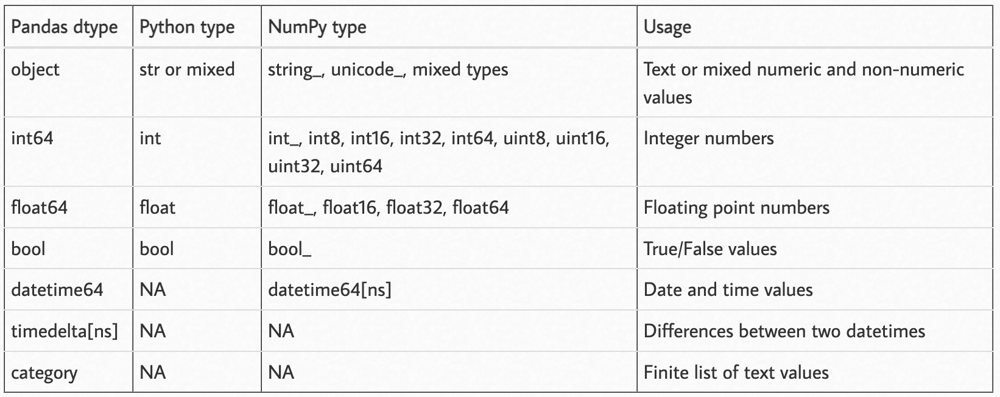

Lab 01: Dealing with Spatial Data in Python#
In this tutorial, we will work on dealing with non-spatial and spatial data using Python libraries: pandas and geopandas. Many concepts/techniques will be echoed to the ones you have learned from Lecture 02: Spatial Database I and Lecture 03: Spatial Database II.
To follow this tutorial, you should have installed Jupyter Notebook (or Jupyter Lab) on your own computer (note: computers in the lab should have already installed it).
Requred packages include:
Mostly, you can use the commond like pip install pandas to install the package.
Basics in Pandas (for non-spatial data)#
Pandas is currently the mostly important tool for data scientists working in Python. It is the backbone of many state-of-the-art techniques like machine learning and visualization. Here we cover the basics of using Pandas. For more comprehensive tutorial, follow this video and/or this post
First of all, the two key components in Pandas are Series and DataFrame. A Series is essentially a column, and a DataFrame is a multi-dimensional table made up of a collection of Series. These two components are quite similar in that many operations that you can do with one, you can do with the other too, such as filling in null values and calculating the mean.

Create a dataframe from scratch#
There are many ways to create a DataFrame from scratch, but a great option is to just use a simple dict (this is a common data structure called dictionary, which is composed by a key:value pair). Each key:value pair corresponds to a column in the resulting DataFrame.
Let’s say we have a fruit stand that sells apples and oranges. We want to have a column for each fruit and a row for each customer purchase. To organize this as a dictionary for pandas we could do something like:
import pandas as pd
data = {
'apples': [3, 2, 0, 1],
'oranges': [0, 3, 7, 2]
}
purchases = pd.DataFrame(data)
purchases
/var/folders/xg/5n3zc4sn5hlcg8zzz6ysx21m0000gq/T/ipykernel_83912/2875102215.py:1: DeprecationWarning:
Pyarrow will become a required dependency of pandas in the next major release of pandas (pandas 3.0),
(to allow more performant data types, such as the Arrow string type, and better interoperability with other libraries)
but was not found to be installed on your system.
If this would cause problems for you,
please provide us feedback at https://github.com/pandas-dev/pandas/issues/54466
import pandas as pd
| apples | oranges | |
|---|---|---|
| 0 | 3 | 0 |
| 1 | 2 | 3 |
| 2 | 0 | 7 |
| 3 | 1 | 2 |
The Index of this DataFrame was given to us as the numbers 0-3. We could also create our own when we initialize the DataFrame.
purchases = pd.DataFrame(data, index=['June', 'Robert', 'Lily', 'David'])
purchases
| apples | oranges | |
|---|---|---|
| June | 3 | 0 |
| Robert | 2 | 3 |
| Lily | 0 | 7 |
| David | 1 | 2 |
So now we could locate a customer’s order by using their name:
purchases.loc['June']
apples 3
oranges 0
Name: June, dtype: int64
Loading data#
We can also load in data with formats like csv, json, txt, and so on. For example, if you downloaded purchase.csv to your local directory, you should be able to load the data by running:
purchases_loaded = pd.read_csv('purchase.csv')
purchases_loaded
| Unnamed:0 | apples | oranges | |
|---|---|---|---|
| 0 | June | 3 | 0 |
| 1 | Robert | 2 | 3 |
| 2 | Lily | 0 | 7 |
| 3 | David | 1 | 2 |
Note here that CSVs don’t have indexes like DataFrames, so we need to designate the index_col when reading:
purchases_loaded = pd.read_csv('purchase.csv', index_col=0)
purchases_loaded
| apples | oranges | |
|---|---|---|
| Unnamed:0 | ||
| June | 3 | 0 |
| Robert | 2 | 3 |
| Lily | 0 | 7 |
| David | 1 | 2 |
Viewing your data#
There are many operations to view/describe your data. For example, you can use .head() to check the first several rows of your dataframe, .tail() to see the last severl rows, .info() to have a list of information about your dataframe (you are suggested to always run it first after your data is loaded), .shape to see the dimension of your dataframe (i.e., how many rows and columns are there?), etc. Let’s try .info() here and you could also try the others yourself.
purchases_loaded.info()
<class 'pandas.core.frame.DataFrame'>
Index: 4 entries, June to David
Data columns (total 2 columns):
# Column Non-Null Count Dtype
--- ------ -------------- -----
0 apples 4 non-null int64
1 oranges 4 non-null int64
dtypes: int64(2)
memory usage: 96.0+ bytes
From the output, you can see our loaded purchases_loaded dataframe has 4 entries (rows), and there are two columnes, each has 4 non-null values and their data types are both int64 (i.e., integer with 64 digits). Data type here is an important concept (we have covered it in our lecture too). Different data types might imply various operations/analysis that are available. See the table below for a full list of data types in Pandas, and Python and NumPy (another important package in Python).

Querying (selecting, slicing, extracting) Dataframe#
Similar to the complex DBMS, Pandas also support selecting, slicing or extracting data from the Dataframe.
Select by column#
We can extract a column using square brackets like this:
purchases_apple = purchases_loaded['apples']
purchases_apple
Unnamed:0
June 3
Robert 2
Lily 0
David 1
Name: apples, dtype: int64
type(purchases_apple)
pandas.core.series.Series
Notice that the returned purchases_apple is a Series. To extract a column as a DataFrame, we need to pass a list of column names. In our case that’s just a single column of “apples”, but is within a double bracket:
purchases_apple = purchases_loaded[['apples']]
type(purchases_apple)
pandas.core.frame.DataFrame
Select by row#
For rows, we can use two ways to extract data:
loc: locates by nameiloc: locates by numerical index
For example, we can select the row of June (how many apples and oranges June has got?) from our purchase_loaded dataframe.
purchases_June = purchases_loaded.loc["June"]
purchases_June
apples 3
oranges 0
Name: June, dtype: int64
Conditional selection#
So far, We’ve gone over how to select columns and rows, but what if we want to make a conditional selection?
For example, what if we want to filter our purchases_loaded DataFrame to show only people who bought apples less than 2?
To do that, we take a column from the DataFrame and apply a Boolean condition to it. Here’s an example of a Boolean condition:
condition = (purchases_loaded['apples'] < 2)
condition
Unnamed:0
June False
Robert False
Lily True
David True
Name: apples, dtype: bool
A little bit more complex, how about showing people who bought apples less than 2 but oranges larger than 2? Can you try it? Hint, you need to use the logic operator & to connect two conditions.
GeoPandas for Spatial Data#
Geopandas is designed to process spatial data in Python. Geopandas combines the capabilities of data processing library pandas with other packages like shapely and fiona for managing and visualizing spatial data. The main data structures in geopandas are GeoSeries and GeoDataFrame which extend the capabilities of Series and DataFrame from pandas, but with spatial speciality.
The key difference between GeoDataFrame and DataFrame is that a GeoDataFrame contains at least one column as geometry so that the data entry is spatially referenced. By default, the name of this column is 'geometry'. The geometry column is a GeoSeries which contains the geometries (points, lines, polygons, multipolygons etc.) as shapely objects.
Loading spatial data#
Spatial data that are in the format of geojson, shp, etc. can all be loaded as GeoPandas’ Dataframe (GeoDataFrame) by using the function read_file(). Let’s use a shapefile (shp) downloaded from OpenStreetMap as an example here. You can also find the specific data (building in Bristol) from Blackboard.
import geopandas as gpd
# Filepath
bristol_building_file = "./bristol-buildings.shp/gis_osm_buildings_a_free_1.shp" # make sure the directory is correct in your case
# Read the file
bristol_building = gpd.read_file(bristol_building_file)
# How does it look?
bristol_building.head()
| osm_id | code | fclass | name | type | geometry | |
|---|---|---|---|---|---|---|
| 0 | 4309554 | 1500 | building | Bristol City Hall | None | POLYGON ((-2.60242 51.45242, -2.60241 51.45244... |
| 1 | 4315318 | 1500 | building | Clifton Cathedral | church | POLYGON ((-2.61673 51.45965, -2.61673 51.45965... |
| 2 | 4315809 | 1500 | building | Clifton Down Shopping Centre | retail | POLYGON ((-2.61133 51.46431, -2.61070 51.46441... |
| 3 | 4317900 | 1500 | building | Za Za Bazaar | None | POLYGON ((-2.59869 51.45029, -2.59865 51.45042... |
| 4 | 4317901 | 1500 | building | Mackenzies Café Bar | commercial | POLYGON ((-2.59851 51.45107, -2.59850 51.45110... |
As can be seen here, the GeoDataFrame bristol_building contains various attributes in separate columns. The geometry column contains the spatial information (it is WKT format, which is implemented by the shapely library). We can next take a look of the basic information of bristol_building using the following command:
bristol_building.info()
<class 'geopandas.geodataframe.GeoDataFrame'>
RangeIndex: 149805 entries, 0 to 149804
Data columns (total 6 columns):
# Column Non-Null Count Dtype
--- ------ -------------- -----
0 osm_id 149805 non-null object
1 code 149805 non-null int64
2 fclass 149805 non-null object
3 name 7587 non-null object
4 type 98915 non-null object
5 geometry 149805 non-null geometry
dtypes: geometry(1), int64(1), object(4)
memory usage: 6.9+ MB
What kind of information can you get from this output?
Since our data is intrinsically spatial (it has a geometry column), we can visualize it to better understand its spatial distribution. plot() is the function for it:
bristol_building.plot()
<Axes: >
Saving spatial data#
Once you are done with your process/analysis, you can also save your GeoDataFrame into files (e.g., .shp, .geojson, etc). Here, since we loaded data from .shp, let’s now try to save our data to .geojson (in the example below, we only save a subset of bristol_building):
bristol_building.iloc[:100].to_file('osm_bristol_buildings.geojson', driver='GeoJSON')
## this will save your data to the current directory same to this notebook.
## you can check the current directory by ruing cwd = os.getcwd()
Retrieving data directly from OSM#
We have so far seen how to read spatial data from your computer disk (i.e., the data is downloaded and saved on your local directory). Next, let’s see how we can retrieve data from OSM directly using a library called pyrosm. With pyrosm, you can easily retrieve data from anywhere in the world based on OSM.PBF files (a specific data format for OSM) that are distributed by Geofabrik. In fact, this is where the Bristol buildings data were downloaded. The package aims to be a more efficient way to parse OSM data covering large geographical areas (such as countries and cities).
Note that if you would like to be flexible about your download, e.g., selecting a bounding box by yourself rather than by administrative regions, you can consider using OSMnx library.
from pyrosm import OSM, get_data# Download data for Bristol
bristol = get_data("bristol")
# Initialize the reader object for Bristol
osm = OSM(bristol)
In the first command, we downloaded the data for “Bristol” using the get_data function. This function in fact automates the data downloading process and stores the data locally in a temporary folder. The next step was to initialize a reader object called osm. The OSM() function takes the filepath of a given osm.pbf file as an input. Notice that at this point we actually haven’t yet read any data into a GeoDataFrame.
OSM contains a lot of information about the world, which is contributed by citizens like you and me. In principle, we can retrieve information under various themes from OSM using the following functions.
road networks –>
osm.get_network()buildings –>
osm.get_buildings()Points of Interest (POI) –>
osm.get_pois()landuse –>
osm.get_landuse()natural elements –>
osm.get_natural()boundaries –>
osm.get_boundaries()
Try them yourselves! You might consider using them in your dissertation project too. Here, let’s extract the road network at Bristol from OSM:
bristol_roadnetwork = osm.get_network()
/Users/gy22808/opt/anaconda3/envs/ox/lib/python3.12/site-packages/pyrosm/networks.py:37: FutureWarning: ChainedAssignmentError: behaviour will change in pandas 3.0!
You are setting values through chained assignment. Currently this works in certain cases, but when using Copy-on-Write (which will become the default behaviour in pandas 3.0) this will never work to update the original DataFrame or Series, because the intermediate object on which we are setting values will behave as a copy.
A typical example is when you are setting values in a column of a DataFrame, like:
df["col"][row_indexer] = value
Use `df.loc[row_indexer, "col"] = values` instead, to perform the assignment in a single step and ensure this keeps updating the original `df`.
See the caveats in the documentation: https://pandas.pydata.org/pandas-docs/stable/user_guide/indexing.html#returning-a-view-versus-a-copy
edges, nodes = prepare_geodataframe(
---------------------------------------------------------------------------
KeyboardInterrupt Traceback (most recent call last)
Cell In[17], line 1
----> 1 bristol_roadnetwork = osm.get_network()
File ~/opt/anaconda3/envs/ox/lib/python3.12/site-packages/pyrosm/pyrosm.py:249, in OSM.get_network(self, network_type, extra_attributes, nodes, timestamp)
246 self._read_pbf(timestamp)
248 # Filter network data with given filter
--> 249 edges, node_gdf = get_network_data(
250 self._node_coordinates,
251 self._way_records,
252 tags_as_columns,
253 network_filter,
254 self.bounding_box,
255 slice_to_segments=nodes,
256 )
258 if edges is not None:
259 # Add metadata
260 edges._metadata.append(network_type)
File ~/opt/anaconda3/envs/ox/lib/python3.12/site-packages/pyrosm/networks.py:37, in get_network_data(node_coordinates, way_records, tags_as_columns, network_filter, bounding_box, slice_to_segments)
34 return None, None
36 # Prepare GeoDataFrame
---> 37 edges, nodes = prepare_geodataframe(
38 nodes,
39 node_coordinates,
40 ways,
41 relations,
42 relation_ways,
43 tags_as_columns,
44 bounding_box,
45 parse_network=True,
46 calculate_seg_lengths=slice_to_segments,
47 )
49 return edges, nodes
File ~/opt/anaconda3/envs/ox/lib/python3.12/site-packages/pyrosm/frames.pyx:136, in pyrosm.frames.prepare_geodataframe()
File ~/opt/anaconda3/envs/ox/lib/python3.12/site-packages/pyrosm/frames.pyx:143, in pyrosm.frames.prepare_geodataframe()
File ~/opt/anaconda3/envs/ox/lib/python3.12/site-packages/pyrosm/frames.pyx:72, in pyrosm.frames.prepare_way_gdf()
File ~/opt/anaconda3/envs/ox/lib/python3.12/site-packages/pyrosm/distance.py:78, in calculate_geom_length(geom)
77 def calculate_geom_length(geom):
---> 78 return calculate_geom_array_length(geom).sum().round(0)
File ~/opt/anaconda3/envs/ox/lib/python3.12/site-packages/pyrosm/distance.py:82, in calculate_geom_array_length(geom_array)
81 def calculate_geom_array_length(geom_array):
---> 82 coords = get_coordinates(geom_array).T
84 # Only every second element should be taken from the coordinates
85 lon1, lat1 = coords[0][:-1:2], coords[1][:-1:2]
File ~/opt/anaconda3/envs/ox/lib/python3.12/site-packages/shapely/coordinates.py:136, in get_coordinates(geometry, include_z, return_index)
93 def get_coordinates(geometry, include_z=False, return_index=False):
94 """Gets coordinates from a geometry array as an array of floats.
95
96 The shape of the returned array is (N, 2), with N being the number of
(...)
134 ([[2.0, 2.0], [4.0, 4.0], [0.0, 0.0]], [0, 0, 1])
135 """
--> 136 return lib.get_coordinates(
137 np.asarray(geometry, dtype=np.object_), include_z, return_index
138 )
KeyboardInterrupt:
We can get the lenth of this DataFrame (how many road network do we have in Bristol from OSM?) and some basic descritions of it by running:
len(bristol_roadnetwork)
102212
bristol_roadnetwork.describe() # note that it only provides a statistical summary for columns whoes data type is numeric
| id | timestamp | version | length | |
|---|---|---|---|---|
| count | 1.022120e+05 | 102212.0 | 102212.0 | 102212.000000 |
| mean | 4.555495e+08 | 0.0 | -1.0 | 108.314650 |
| std | 3.824359e+08 | 0.0 | 0.0 | 193.418633 |
| min | 1.900000e+02 | 0.0 | -1.0 | 0.000000 |
| 25% | 8.795292e+07 | 0.0 | -1.0 | 20.000000 |
| 50% | 3.684994e+08 | 0.0 | -1.0 | 48.000000 |
| 75% | 7.817397e+08 | 0.0 | -1.0 | 111.000000 |
| max | 1.245598e+09 | 0.0 | -1.0 | 7572.000000 |
Likewise, we can also plot it. Please try it yourself.
Coordinate Reference System for GeoDataFrame#
Another difference between GeoDataFrames and DataFrames is that the former has intrinsic coordinate reference system (CRS) as it has the geometry column. To check this information, we can call its attribute crs:
bristol_roadnetwork.crs
<Geographic 2D CRS: EPSG:4326>
Name: WGS 84
Axis Info [ellipsoidal]:
- Lat[north]: Geodetic latitude (degree)
- Lon[east]: Geodetic longitude (degree)
Area of Use:
- name: World.
- bounds: (-180.0, -90.0, 180.0, 90.0)
Datum: World Geodetic System 1984 ensemble
- Ellipsoid: WGS 84
- Prime Meridian: Greenwich
It shows that coordinates in geometry column are using the WGS 84 with a EPSG code 4326. In fact, it is the mostly used coordinate reference system (CRS) in spatial data science as it is a global coordinate system and has been used for GPS as well. However, as we covered in the lecture, those global CRSs are not that accurate for local regions. For the UK, or Bristol, a more commonly used CRS is EPSG:27700 (National Grid for Great Britain), and this CRS is also projected. Let’s then transfer bristol_roadnetwork from EPSG:4326 to EPSG:27700:
bristol_roadnetwork_reprojected = bristol_roadnetwork.to_crs(epsg=27700)
bristol_roadnetwork_reprojected.crs
<Projected CRS: EPSG:27700>
Name: OSGB36 / British National Grid
Axis Info [cartesian]:
- E[east]: Easting (metre)
- N[north]: Northing (metre)
Area of Use:
- name: United Kingdom (UK) - offshore to boundary of UKCS within 49°45'N to 61°N and 9°W to 2°E; onshore Great Britain (England, Wales and Scotland). Isle of Man onshore.
- bounds: (-9.01, 49.75, 2.01, 61.01)
Coordinate Operation:
- name: British National Grid
- method: Transverse Mercator
Datum: Ordnance Survey of Great Britain 1936
- Ellipsoid: Airy 1830
- Prime Meridian: Greenwich
Now we have an projected CRS for the road network data in Bristol. To confirm the difference, let’s take a look at the geometry of the first row in our original road network bristol_roadnetwork and the projected bristol_roadnetwork_reprojected.
orig_geom = bristol_roadnetwork.loc[0, "geometry"]
projected_geom = bristol_roadnetwork_reprojected.loc[0, "geometry"]
print("Orig:\n", orig_geom, "\n")
print("Proj:\n", projected_geom)
Orig:
MULTILINESTRING ((-2.6097211837768555 51.3657112121582, -2.609546422958374 51.36564636230469), (-2.609546422958374 51.36564636230469, -2.609264612197876 51.365482330322266), (-2.609264612197876 51.365482330322266, -2.6088733673095703 51.365318298339844), (-2.6088733673095703 51.365318298339844, -2.608508825302124 51.36508560180664), (-2.608508825302124 51.36508560180664, -2.6083426475524902 51.3649787902832), (-2.6083426475524902 51.3649787902832, -2.608126163482666 51.364810943603516), (-2.608126163482666 51.364810943603516, -2.607820749282837 51.36458206176758))
Proj:
MULTILINESTRING ((357648.974429959 163137.70370458602, 357661.0804417359 163130.39013390895), (357661.0804417359 163130.39013390895, 357680.5471925497 163111.98427999223), (357680.5471925497 163111.98427999223, 357707.6323758529 163093.51498389826), (357707.6323758529 163093.51498389826, 357732.79552590376 163067.42507962266), (357732.79552590376 163067.42507962266, 357744.2656479743 163055.45009858347), (357744.2656479743 163055.45009858347, 357759.1817168629 163036.65820931632), (357759.1817168629 163036.65820931632, 357780.23268873093 163011.0270668068))
As we be seen, the coordinates that form our road segments (MULTILINESTRING) has changed from decimal degrees to meters. Next, let’s visualize it:
orig_geom
projected_geom
As you can see, the shape of the two road segments are quite different (e.g., the lenth, where the curve occures, etc.). This is exactly due to the difference between the two CRSs.
It is also worth noting here, the data type, MultiLineString, of the variables orig_geom and projected_geom are defined by shapely. It enables us to conduct these kind of spatial operations and visializations.
type(orig_geom)
shapely.geometry.multilinestring.MultiLineString
Computation on GeoDataFrame#
There are many operations embeded in GeoDataFrame that can be directly called to do some spatial computations. For example, we can get the area of buildings for our bristol_building dataframe:
bristol_building["building_area"] = bristol_building.area
bristol_building["building_area"].describe()
/var/folders/xg/5n3zc4sn5hlcg8zzz6ysx21m0000gq/T/ipykernel_11376/2251981216.py:1: UserWarning: Geometry is in a geographic CRS. Results from 'area' are likely incorrect. Use 'GeoSeries.to_crs()' to re-project geometries to a projected CRS before this operation.
bristol_building["building_area"] = bristol_building.area
count 1.498050e+05
mean 1.341308e-08
std 6.657677e-08
min 5.667000e-11
25% 6.084315e-09
50% 7.575225e-09
75% 1.033238e-08
max 1.038017e-05
Name: building_area, dtype: float64
Here, you can see a warning that the current Geometry is in a geographic CRS, hence the results of computing area mighht not be accurate. Can you project the dataframe to a projected coordicate reference system (e.g.,EPSG:27700 in our case)? After your projection, do the area computation again. What do the results look like? What is the unit of the area?
Spatial join#
As we have discussed in the lecture, joining tables using keys is a core operation for DBMS. Regarding spatial data, spatial join is somewhat similar to table join but with the operation being based on geometries rather than keys.
In this tutorial, we will try to conduct a spatial join and merge information between two GeoDataFrames. First, let’s read all restaurants (a type of Point of Interests (POI)) at Bristol from the OSM. Then, we combine information from restaurants to the underlying building (restaurants typically are within buildings). We will again use pyrosm for reading the data, but this time we will use the get_pois() function:
# Read Points of Interest (POI) using the same OSM reader object that was initialized earlier
# The custom_filter={"amenity": ["restaurant"]} indicates that we want only "restaurant", a type of POI
bristol_restaurants = osm.get_pois(custom_filter={"amenity": ["restaurant"]})
bristol_restaurants.plot()
<Axes: >
bristol_restaurants.info()
<class 'geopandas.geodataframe.GeoDataFrame'>
RangeIndex: 677 entries, 0 to 676
Data columns (total 31 columns):
# Column Non-Null Count Dtype
--- ------ -------------- -----
0 id 677 non-null int64
1 timestamp 677 non-null uint32
2 tags 640 non-null object
3 changeset 143 non-null float64
4 lon 142 non-null float32
5 version 677 non-null int32
6 visible 676 non-null object
7 lat 142 non-null float32
8 addr:city 501 non-null object
9 addr:country 53 non-null object
10 addr:housenumber 488 non-null object
11 addr:housename 101 non-null object
12 addr:postcode 620 non-null object
13 addr:place 27 non-null object
14 addr:street 583 non-null object
15 email 29 non-null object
16 name 672 non-null object
17 opening_hours 103 non-null object
18 operator 14 non-null object
19 phone 107 non-null object
20 website 258 non-null object
21 amenity 677 non-null object
22 bar 4 non-null object
23 internet_access 10 non-null object
24 source 20 non-null object
25 geometry 677 non-null geometry
26 osm_type 677 non-null object
27 building 524 non-null object
28 building:levels 75 non-null object
29 start_date 3 non-null object
30 wikipedia 3 non-null object
dtypes: float32(2), float64(1), geometry(1), int32(1), int64(1), object(24), uint32(1)
memory usage: 153.5+ KB
From the info(), we can see that there are 676 restaurants in Bristol according to OSM (you might see a different number depending on which version of OSM data you have downloaded). Note that OSM is a valunteered geographic information platform. So the quality, accuracy, and completness of the data might be low.
Next, let’s join data from bristol_buildings to bristol_restaurantsusingsjoin()` function from geopandas:
# Join information from buildings to restaurants
bristol_join = gpd.sjoin(bristol_restaurants, bristol_building)
# Print column names
print(bristol_join.columns)
# Show rows
bristol_join
Index(['id', 'timestamp', 'tags', 'changeset', 'lon', 'version', 'visible',
'lat', 'addr:city', 'addr:country', 'addr:housenumber',
'addr:housename', 'addr:postcode', 'addr:place', 'addr:street', 'email',
'name_left', 'opening_hours', 'operator', 'phone', 'website', 'amenity',
'bar', 'internet_access', 'source', 'geometry', 'osm_type', 'building',
'building:levels', 'start_date', 'wikipedia', 'index_right', 'osm_id',
'code', 'fclass', 'name_right', 'type', 'building_area'],
dtype='object')
| id | timestamp | tags | changeset | lon | version | visible | lat | addr:city | addr:country | ... | building:levels | start_date | wikipedia | index_right | osm_id | code | fclass | name_right | type | building_area | |
|---|---|---|---|---|---|---|---|---|---|---|---|---|---|---|---|---|---|---|---|---|---|
| 8 | 853556896 | 0 | None | 0.0 | -2.611020 | 0 | False | 51.458733 | None | None | ... | NaN | NaN | NaN | 24609 | 451622999 | 1500 | building | The Clifton | None | 9.942395e-09 |
| 10 | 1207448023 | 0 | None | 0.0 | -2.625203 | 0 | False | 51.453415 | None | None | ... | NaN | NaN | NaN | 1164 | 104679655 | 1500 | building | Avon Gorge Hotel | hotel | 8.777610e-08 |
| 12 | 1386051923 | 0 | None | 0.0 | -2.619858 | 0 | False | 51.455570 | Bristol | None | ... | NaN | NaN | NaN | 23228 | 444980827 | 1500 | building | Rodney Hotel | None | 2.753519e-08 |
| 17 | 1881624837 | 0 | {"cuisine":"regional","outdoor_seating":"yes",... | 0.0 | -2.585233 | 0 | False | 51.451546 | Bristol | None | ... | NaN | NaN | NaN | 2138 | 125956114 | 1500 | building | Hilton Garden Inn Bristol City Centre | None | 1.725836e-07 |
| 21 | 2900424207 | 0 | {"cuisine":"pizza"} | 0.0 | -2.589893 | 0 | False | 51.456440 | None | None | ... | NaN | NaN | NaN | 1945 | 124113904 | 1500 | building | The Galleries | None | 6.674781e-07 |
| ... | ... | ... | ... | ... | ... | ... | ... | ... | ... | ... | ... | ... | ... | ... | ... | ... | ... | ... | ... | ... | ... |
| 671 | 1069613264 | 0 | {"house":"terraced"} | NaN | NaN | -1 | False | NaN | Bristol | None | ... | 2 | None | None | 145381 | 1069613265 | 1500 | building | None | house | 5.491100e-09 |
| 671 | 1069613264 | 0 | {"house":"terraced"} | NaN | NaN | -1 | False | NaN | Bristol | None | ... | 2 | None | None | 145380 | 1069613264 | 1500 | building | None | house | 6.423220e-09 |
| 674 | 1188184241 | 0 | {"addr:suburb":"Clifton","fhrs:id":"1584632"} | NaN | NaN | -1 | False | NaN | Bristol | None | ... | None | None | None | 10652 | 275376189 | 1500 | building | Ruby & White | None | 1.343296e-08 |
| 674 | 1188184241 | 0 | {"addr:suburb":"Clifton","fhrs:id":"1584632"} | NaN | NaN | -1 | False | NaN | Bristol | None | ... | None | None | None | 10640 | 275376177 | 1500 | building | Everyman | None | 1.508399e-07 |
| 676 | 13571356292 | 0 | {"addr:suburb":"Clifton","cuisine":"indian","f... | 0.0 | NaN | -1 | NaN | NaN | Bristol | NaN | ... | NaN | NaN | NaN | 138593 | 13450709 | 1500 | building | The Mint Room | None | 1.037321e-08 |
862 rows × 38 columns
Now with this joined table, you can check which building each restaurant is locatd in. Note that after joining information from the buildings to restaurants, geometries of the left-side GeoDataFrame, i.e. restaurants, were kept by as the default geometries. So if we plot bristol_join, you will only see restaurants, rather than buildings + restaurant. Please try!
Also by default, sjoin() use the topological relation - intersects. You can also specify this parameter as other types of topological relatoons (e.g., contains and within) in the function. More details can be found at: https://geopandas.org/en/stable/docs/reference/api/geopandas.sjoin.html
Visualization#
So far, we simply used the plot() function to visualize GeoDataFrame. These maps are less appealing compared to the ones generated via GIS softwares. In fact, the package: matplotlib is very powerful in providing us beautiful visualization in Python. Let’s try it.
First, let’s add some legends to the bristol_building data using its building type:
ax = bristol_building.plot(column="type", cmap="RdYlBu", figsize=(12,12), legend=True)
Here, we used the parameter column to specify the attribute that is used to specify the color for each building (it can be categorical or continuous). We then used cmap to specify the colormap for the categories and we added the legend by specifying legend=True. Note that since the type of buildings for Bristol is very diverse, we see a long list of legend. There are ways to make it into two columns, for example. Can you explore how to achieve it? Feel free to use Google search!
Another issue is that the map is in a very large map scale. Next, we would like to zoom in a little bit. To do so, we can use set_xlim() and set_ylim() functions:
# Zoom into city center by specifying X and Y coordinate extent
# These values should be given in the units that our data is presented (here decimal degrees)
xmin, xmax = -2.65, -2.55
ymin, ymax = 51.44, 51.48
# Plot the map again
ax = bristol_building.plot(column="type", cmap="RdYlBu", figsize=(12,12), legend=True)
# Control and set the x and y limits for the axis
ax.set_xlim([xmin, xmax])
ax.set_ylim([ymin, ymax])
(51.44, 51.48)
As you can see, we now zoomed in to the city center quite a lot. You can adjust the parameters yourself and test more!
Meanwhile, you may wonder whether we can overlay multiple dataframes into the map? The answer is yes. Here is a sample code:
# Zoom into city center by specifying X and Y coordinate extent
# These values should be given in the units that our data is presented (here decimal degrees)
xmin, xmax = -2.65, -2.55
ymin, ymax = 51.44, 51.48
# Plot the map again
ax = bristol_building.plot(column="type", cmap="RdYlBu", figsize=(12,12), legend=True)
# Plot the roads into the same axis
ax = bristol_roadnetwork.plot(ax=ax, edgecolor="gray", linewidth=0.75)
# Control and set the x and y limits for the axis
ax.set_xlim([xmin, xmax])
ax.set_ylim([ymin, ymax])
(51.44, 51.48)
Congrats! You have now finished the very first lab of using Python to process spatial data. I hope you enjoyed it and have seen the power of GeoPandas, and Python in general, for processing and studying spatial data. It is also worth highlighting that the functions introduced in this tutorial are selective. There are way more interesting and useful functions provided by these aforementioned packages. I highly recommended you to explore them by yourself. Learning never stops!
Finally, let’s go back to the task of asking you to figure out how to better organize the long legend box. Below is the solution I found. There might be other ways of doing it. How is yours?
Basically, I used the parameter legend_kwds to set up the number of columns (ncol) to be 4. For more details, check its official documentation. Note that knowing how to read these kinds of documentations would be very helpful for your programming, so it is an important skill/experience you should develop.
from mpl_toolkits.axes_grid1 import make_axes_locatable
import matplotlib.pyplot as plt
xmin, xmax = -2.65, -2.55
ymin, ymax = 51.44, 51.48
fig, ax = plt.subplots(figsize=(12, 12))
bristol_building.plot(column='type',
categorical=True,
cmap="RdYlBu",
ax=ax,
legend=True,
legend_kwds={'loc': 'lower left',
'ncol': 4,
'bbox_to_anchor': (0, 0, 0.5,0.5)})
#ax.set_axis_off()
ax.set_xlim([xmin, xmax])
ax.set_ylim([ymin, ymax])
plt.show()